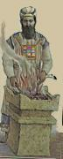

PEOPLE THEMSELVES-lf FREQUENT YOUR TEMPLE, HAPPY THEY-lf. THEY-lf PRAISE YOUR NAME FOREVER. THEIR-lf GOD WHO? LORD HE. HAPPY THEY-lf. (CONTINUE PRAY SILENT) ...
ME TELL-STORY++ PRAISE LORD. (2h)#ALL PEOPLE PRAISE HIS NAME FOREVER MUST. WE PRAISE LORD FROM-NOW-ON FOREVER. HALLELUJAH.
MESSIAH ARRIVE MOUNTAIN Z-I-O-N WILL. (CONTINUE PRAY SILENT) ...
PEOPLE THEMSELVES-lf KNOW YOUR-God's NAME, TRUST YOU. IF PEOPLE REQUEST HELP-us, YOU TURN-DOWN NEVER. PEOPLE THEY-lf FOLLOW YOUR LAW, LORD YOU REALLY-WANT THEM-lf REALIZE TORAH (<) WONDERFUL, (>) CHERISH MUST.
HIS-rt GLORY, HOLY. PRAISE HIS-rt NAME. WE MUST ANNOUNCE HIS-rt WORTH. SPREAD WORLD THEREABOUTS HE-rt HIMSELF MAKE. HOPE DURING YOUR(plural) LIFE TIME-PERIOD EVERYONE ACCEPT AUTHORITY HIS-rt. COME-ON SAY, AMEN.
PRAY WE CONTINUE PRAISE HIM-rt FROM-NOW-ON, FOREVER-AND-EVER.
WE THANK, PRAISE, RECOGNIZE BEAUTY ADVANCED, LIFT-UP SPLENDOR, SING HIS-rt NAME HOLY AND SUPREME. BOW-DOWN-TO HIM-rt. WE REALIZE THANK, SING, PRAISE, AND COMFORT WE SPEAK HERE WORLD, NOT ENOUGH, NOT ENOUGH. COME-ON SAY AMEN.
On Sabbath: MYSELF PRAY. HOPE TIME APPROPRIATE YOU ANSWER. GOD, YOU WILLING'pc' GOD-HAVE-MERCY-ON-us. PLEASE ANSWER. YOUR TRUTH SAVE US.
The Ark is opened.
Reader: BEFORE JEWISH PEOPLE GROUP-WANDER DESERT. HAVE A-R-K GOLD (2h)B-CL'box', GOLD (2h)F-CL'staves perpendicular to body'. PEOPLE FOUR (2h)1-CL'@ each corner' (2h)S-CL'bear on shoulder' CARRY'forward'. EACH TIME JEWISH PEOPLE GROUP-MOVE-FORWARD, MOSES SAY, 90 LORD YOUR ENEMY GOD-FORCE-ctr SCATTER. IF THEY-ctr HATE-GOD GOD-FORCE-ctr ESCAPE"each'.
Congregation
TORAH ITS-WAY TEMPLE SHOW"all" WORLD. HIS LAW, JERUSALEM TEACH"each".
WE PRAISE YOU. WHY? TORAH, YOU GIVE-us US JEWISH, YOUR SPECIAL PEOPLE, HELP-us BECOME HOLY.
Two Scrolls of the law are taken from the Ark.
Reader: ANNOUNCE TOGETHER ME, LORD HIMSELF WONDERFUL. HIS-God's NAME ADVANCED, (2h)#ALL AGREE.
Congregation and Reader: (1) STRENGTH, (2) BEAUTY, (3) NAME SHINY, (4) VICTORY, (5) CONTROL, #ALL-FIVE-ON-LIST YOURS, LORD. WHY? YOU (<) MAKE HEAVEN, (>) MAKE EARTH. POWER PLUS AUTHORITY YOURS, LORD. OUR GOD ADVANCED. ENTER HIS TEMPLE, BOW-DOWN-TO-GOD HERE EARTH, HIMSELF HOLY. LORD OUR GOD HOLY.
First aliyah: (<) HEAVEN, PLEASE Heaven-PAY-ATTENTION-TO-me ME. (>) EARTH~THEREABOUTS, ME NEED INFORM"all". (<) ME TEACH (2h)YOU, HOPE IDEA~LIKE RAIN"descend", GRASS GROW~SPREADwg. (>) ME LECTURE IDEA~LIKE EARLY-MORNING WATER~(2h)5wg-CL'dew descend', YOUR"all" SKIN FEEL GOOSE-FLESH. ME INFORM"all" LORD 'S SPLENDOR. NOW GO-TO"each" ANNOUNCE LORD WONDERFUL*.
Second aliyah: GOD IDEA~LIKE ROCK FOUNDATION. (<) EVERYTHING HE MAKE, PERFECT. (>) EVERYTHING HE DO, JUST. TRUST HIM, MEAN SIN NEVER. SUPPOSE WORLD PROCEED"mm", SUDDEN-WRONG SCREWED-UP. HE CRUEL, DON'T-MEAN-TO-SAY. BLAME~YOURSELVES, HIS CHILDREN. GOD 'S WAY, YOU"all" PERVERT, FOOLISH*. YOUR HEAVNELY-FATHER (2h)alt.GIFT-TO-"each + pc", YOU"all" REBEL-AGAINST-GOD? FOR-FOR? (<) WHO MAKE YOU"all", (>) WHO HELP"each"? THINK*.
Third aliyah: LOOK-BACK REMEMBER. YOUR GREAT-GRANDFATHER (2h)LONG-AGO TELL-STORY~PASS-DOWN"progressively". YOUR"all" FATHER TELL-STORY++ CAN. HE SUPREME DECIDE HOW WORLD DIVIDE. COUNTRY SET-UP"each" EXACT. READY HAVE ISRAEL JUST-RIGHT. GOD SAVE SPECIAL, PASS-DOWN FOR US, HIS PEOPLE. HE FOUND J-A-C-O-B LIVE DESERT. GROUND (2h)B-CL'vast dunes', WIND'toss with force'. (2h)5wg-CL'circulate wildly.' GOD NURTURE"slowly", TAKE-CARE-OF. CHERISH*. IDEA~LIKE EAGLE (2h)B-CL'swoop down majestically'. BIRD YOUNG (2h)4-CL'look up timidly'. FATHER (2h)V:-CL'scoop up with claws'. (2h)B-CL'swoop up majestically'. CRAZY-FOR. LORD HIMSELF LEAD. HE GOD, ONLY-ONE*.
The Ark is opened.
Reader: (2h)COME-ON PRAISE LORD 'S NAME. WHY? HIS NAME ONLY ADVANCED*.
Cong. (<) HEAVEN, (>) EARTH, BOTH KNOW-THAT HIS SPLENDOR. WE SHARE HIS NAME. KNOW-THAT WE PRAISE HIM. TWO-OF-US RELATED STRONG. HALLELUJAH.
KING-DAVID HIS-rt PSALM. (<) EARTH, (>) EVERYTHING~THEREABOUTS, HIS. (CONTINUE PRAY SPEAK-TO-SELF) ... JERUSALEM HAVE GATES OLD*. NOW TIME OPEN-GATES. ALLOW KING SPLENDOR, ENTER. KING WHO? LORD HIMSELF KING. HIS-God's SPLENDOR.
FROM-TIME-TO-TIME HIS-God's A-R-K GOLD (2h)B-CL'box'. GOLD (2h)F-CL'staves perpendicular to body" STAY. HAPPEN? (CONTINUE PRAY SPEAK-TO-SELF)... TORAH IDEA~LIKE TREE. (2h)alt.C-CL'pick fruit from rt and eat' LIFE IMPROVE*. HELP-rt BLOSSOM@rt, INSPIRED. IF WE FOLLOW HIS-God's LAW, (<) LIVE SMOOTH, (>) HAVE PEACE. LORD HELP-us US #BACK-TOGETHER-GOD. WE WILLING. PLEASE MAKE TODAY LIKE USED-TO-BE.
The Ark is closed.
HIS-rt GLORY, HOLY. PRAISE HIS-rt NAME. WE MUST ANNOUNCE HIS-rt WORTH. SPREAD WORLD THEREABOUTS HE-rt HIMSELF MAKE. HOPE DURING YOUR(plural) LIFE TIME-PERIOD EVERYONE ACCEPT AUTHORITY HIS-rt. COME-ON SAY, AMEN.
PRAY WE CONTINUE PRAISE HIM-rt FROM-NOW-ON, FOREVER-AND-EVER.
WE THANK, PRAISE, RECOGNIZE BEAUTY ADVANCED, LIFT-UP SPLENDOR, SING HIS-rt NAME HOLY AND SUPREME. BOW-DOWN-TO HIM-rt. WE REALIZE THANK, SING, PRAISE, AND COMFORT WE SPEAK HERE WORLD, NOT ENOUGH, NOT ENOUGH. COME-ON SAY AMEN.
LORD, OUR GOD, OUR FOREFATHERS, (1-OF-3) ABRAHAM53, (2-OF-3) ISAAC54, (3-OF-3) JACOB, WORSHIP YOU. PASS-DOWN'bit by bit'. WE ALSO WORSHIP YOU. YOURSELF-God STRONG*, ADVANCED*, WONDERFUL*. WORLD~GENERAL, YOU CONTROL. EVERYTHING GOOD, YOU alt.GIFT-TO"each". INDEX-LIST-OF-3, INTERNALIZE55 YOUR LAW, MEAN JEWISH PEOPLE HAVE RIGHT YOU SEND MESSIAH SAVE US. WHY? YOU LOVE US. WE PRAISE YOU. WHY? YOU LORD, GOD, KING ADVANCED THROUGH PRAISE, APPROPRIATE THANK++, CAUSE MIRACLE56, ENJOY OUR MUSIC, KING, GOD, (2h)#ALL LIFE FROM YOU.
REMEMBER US FOR LIFE, YOU KING CHERISH LIFE. PLUS LONG LIFE BOOK, PUT-DOWN OUR NAME FOR YOUR S-A-K-E, GOD CAUSE LIVE.
YOU KING, HELPER, SAVIOR, PROTECTOR. WE PRAISE YOU, LORD. WHY? YOU PROTECT ABRAHAM IDEA~LIKE SHIELD57.
SUPPOSE SOMEONE DIE. YOU SUMMON, GET-UP LIVE. POWER YOURS+ CONTINUE FOREVER. YOU HELP-ctr LIVE CONTINUE.
YOU SOFT-HEARTED. SOMEONE DIE, YOU HAVE-MERCY-ON-ctr. (2h)COME-ON, GET-UP, LIVE FOREVER CAN. (<) SOMEONE FAIL, YOU SUPPORT. (>) SOMEONE SICK, YOU HELP RECOVER. (<) OPPRESSION58, YOU OPPRESSION-OFF. (>) SOMEONE LOWERED-INTO-GRAVE59 GRAVE, TRUST YOU HELP-ctr CAN. WHO HAVE POWER LIKE YOU WHO? IDEA~LIKE KING, (<) BLAME RIGHT, GO-AHEAD KILL, (>) BLAME WRONG, ALLOW LIFE. SAVE, YOURS+.
WHO LIKE YOU, HEAVENLY-FATHER60 MERCY-ON-us, ALLOW LIVE THINGS HAPPY TAKE-OFF61.
WE TRUST YOU, SOMEONE DIE. YOU SUMMON, GET-UP LIVE. WE PRAISE. WE PRAISE LORD. WHY? YOU HELP DEAD, GET-UP LIVE.
KNOW-THAT FAR-AWAY-Heaven62, ANGEL SCADS-OF angels-SAME-AS-us63 ANNOUNCE GOD HOLY. PROPHET WRITE, QUOTE, ANGEL THEY-'in Heaven' CALL-ON EACH-OTHER ANNOUNCE:
HOLY++-upward. LORD HIMSELF CONTROL US. EARTH~GENERAL SHOW"all" AUTHORITY HIS.
Reader: we-SAME-AS-angels ANNOUNCE PRAISE.
Cong. and Reader: WE (<) PRAISE, (>) HONOR LORD. WHERE FROM? HIS SPECIAL PLACE.
Reader. GOD~BOOK SAY, QUOTE.
Cong. and Reader: LORD CONTROL LIKE KING FOREVER. MOUNTAIN ZION ITS GOD, GENERATION"step by step", HALLELUJAH.
Reader: WE ANNOUNCE YOU (<) WONDERFUL*, (>) HOLY, PLUS TEACH"each" CHILDREN PASS-DOWN"bit by bit' FOREVER. WE PRAISE"over time" GOD. END, NEVER. WHY? YOU (<) GOD WONDERFUL*, (>) KING HOLY.
KNOW-THAT LORD, OUR GOD, TEACH-us US UNDERSTAND WORLD~GENERAL. SHOW-us HOW RESPECT-God. HAPPEN? (2h)#ALL REALIZE YOU GOD, BOW-DOWN-TO-God. (2h)#ALL YOUR CHILDREN COOPERATE FOLLOW YOUR LAW, THEIR-ctr HEART PERFECT. WHY? LORD, OUR GOD, WE KNOW-THAT (<) POWER, (>) AUTHORITY SUPREME, YOURS. WE RESPECT-God YOUR NAME MORE-THAN RESPECT-ctr WORLD~GENERAL. ?
KNOW-THAT, LORD, (<) WE WORSHIP, (>) PLEASE GIFT-TO-us SPLENDOR. (<) WE RESPECT-God, (>) GOD-PRAISE-lf.[?] (<) WE STRIVE-FOR-God, (>) GOD-INFORM-us US GOOD HAPPEN WILL. (<) WE REALLY-WANT CONNECT-TO-God, (>) HE HELP-us TRUST. GOD, PLEASE CAUSE (<) ISRAEL HAPPY, (>) JERUSALEM CELEBRATE. (<) KING ANOINTED PASS-DOWN AUTHORITY, STRONG. (>) PEOPLE STAND MOUNTAIN Z-I-O-N WORSHIP, SEND SUNSHINE. WE HOPE HAPPEN SOON DURING OUR LIFE TIME-PERIOD. ***
KNOW-THAT (<) PEOPLE FOLLOW YOUR LAW, WITNESS KING ANOINTED. PROCEED CELEBRATE SONG, (>) BUT SINNER TRY DOMINATE, SUDDEN-WRONG GOD DESTROY IDEA~LIKE SMOKE SPREAD-OUT'from on high', GONE.
WHO RULE WORLD IDEA~LIKE KING WHO? (<) MOUNTAIN Z-I-O-N~THEREABOUTS, (>) JERUSALEM YOUR CITY HOLY, YOU LORD, ONLY YOU RULE . PSALMS PREDICT QUOTE LORD RULE IDEA~LIKE KING FOREVER. MOUNTAIN Z-I-O-N , YOUR-lf GOD CONTINUE"over time". HALLELUJAH.
YOU HOLY. YOUR NAME SHINY AWFUL. NONE EQUAL-God YOU. GOD~BOOK SAY QUOTE, (<) WE ACT JUST, (>) SHOW"all" LORD HIMSELF CONTROL ANGEL SCADS-OF-heaven, ADVANCED*. (<) WE DO RIGHT*, (>) SHOW"all"GOD HIMSELF HOLY. LORD, WE PRAISE YOU. WHY? YOU KING HOLY.
COUNTRY VARIOUS, YOU PICK-lf JEWISH PEOPLE, CHERISH THEM -lf, arc. GOD-COMMAND-lf SEPARATE-TO-lf MAKE@lf HOLY. WE WORSHIP OUR KING. WE we-CONNECTED-TO-God HIS NAME (<) WONDERFUL*, (>) HOLY.
On Sabbath add the bracketed words:
LORD OUR GOD, YOU LOVE US. YOU GIFT-TO-us US [NOW SABBATH PLUS] NOW DAY LOOK-BACK REMEMBER YOU MAKE WORLD~GENERAL. TODAY WE [THINK-ABOUT] SOUND-SHOFAR. WE ASSEMBLE CELEBRATE HOLY. LOOK-BACK REMEMBER GOD GOD-HELP-lf JEWISH PEOPLE ESCAPE LEAVE-FROM-lf EGYPT.
PLEASE REMEMBER JEWISH PEOPLE THEM SELVES-lf KIND, HAVE-MERCY-ON-lf. WHY? REMEMBER OUR G-G-GRANDFATHER~(2h)LONG-AGO WORSHIP GOD. PASS-DOWN'bit by bit'. WE ALSO WORSHIP GOD. REMEMBER KINGODAVID YOUR SERVANT PASS-DOWEN ANOINTED KING SAVE US WILL. REMEMBER JERUSALEM YOUR CITY HOLY. REMEMBER (2h)#ALL JEWISH PEOPLE. CAUSE (<) LIVE SMOOTH, (>) HAVE PEACE. DURING TODAY LOOK-BACK REMEMBER GOD MAKE WORLD. LORD OUR GOD, PLEASE REMEMBER (2h)alt.GIFT-TO-us US GOOD~THINGS. BLESS OUR LIFE. YOU PROMISE SAVE US, GOD-GIVE-FROM-HEART-TO-lf. (<) GOD-HAVE-MERCY-ON-us US, (>) SAVE US. WE LOOK-TO-God GOD GOD-HELP-us. WHY? GOD IDEA~LIKE KING GOD-HAVE-MERCY-ON-lf, GOD-GIVE-FROM-HEART-TO-lf.
OUR GRANDFATHER~(2h)LONG-AGO WORSHIP GOD. PASS-DOWN'bit by bit'. WE ALSO WORSHIP GOD. PLEASE RULE WORLD~GENERAL IDEA~LIKE KING. YOUR SPLENDOR SPREAD WORLD~THEREABOUTS, ADVANCED*. SHOW"all" AUTHORITY SUPREME YOURS. EVERY PERSON LOOK-TO-God REALIZE
YOU MAKE WORLD. (2h)#ALL ANNOUNCE JEWISH PEOPLE THEIR-lf LORD GOD IDEA~LIKE KING. HE RULE (2h)#ALL. [OUR GRANDFATHER~(2h)LONG-AGO WORSHIP GOD. PASS-DOWN'bit by bit'. WE ALSO WORSHIP GOD. WE HONOR-God REST we-SAME-AS-God REST SEVENTH DAY.] YOU GOD-COMMAND-lf US SEPARATE-TO-lf MAKE@lf HOLY. GOD-HELP-us LEARN TORAH. GOD-(2h)alt.GIFT-TO-us GOOD~THINGS. YOU SAVE US, INSPIRED. [YOUR SABBATH HOLY, WE TEACH OUR CHILDREN PASS-DOWN, CHERISH. JEWISH PEOPLE REST, PRAISE YOUR NAME.] OUR HEART NEED BECOME CLEAN*, WORSHIP-God YOU TRUE~WORK. WHY? GOD YOURSELF TRUTH. EVERYTHING YOU SAY TRUE FOREVER. LORD YOURSELF IDEA~LIKE KING RULE ALL EARTH. On Sabbath: (1) SABBATH, (2) JEWISH PEOPLE, (3) TODAY LOOK-BACK REMEMBER, Not on the Sabbath: (1) JEWISH PEOPLE, (2) TODAY LOOK-BACK REMEMBER, YOU MAKE BOTH HOLY.
LORD OUR GOD, JEWISH PEOPLE PRAY, PLEASE GOD-ANSWER-lf. SET-UP TEMPLE AGAIN. WHY? WE REALLY-WANT (<) SACRIFICE, (>) PRAY. YOUR PEOPLE WORSHIP, PLEASE ACCEPT CONTINUE++. HOPE WE WITNESS YOU GOD-GO-#BACK-TO-ctr MOUNTAIN Z-I-O-N.
LORD, WE THANK-YOU++. KNOW-THAT OUR GRANDFATHER~(2h)LONG-AGO WORSHIP GOD. PASS-DOWN'bit by bit'. WE ALSO WORSHIP GOD PLUS TEACH"each" OUR CHILDREN WORSHIP PASS-DOWN FOREVER. YOU FOUNDATION OUR LIFE. IDEA~LIKE FIND ROCK FLAT, GO-AHEAD SET-UP HOUSE. FROM-TIME-TO-TIME SOMEONE OPPRESS-lf JEWISH PEOPLE, YOU OFF-OPPRESSION. WE (<) (2h)THANK++-God, (>) PRAISE-God. WHY? (1) OUR LIFE OFFER-TO-God, TRUST-God CAN. (2) YOU GOD-TAKE-CARE-OF-us OUR SOUL. (3) EVERYDAY WE (2h)NOTICE"each" YOUR WORK WONDERFUL*. (4) ALL-DAY~ALL-NIGHT YOU (2h)alt.GIFT-TO-us GOOD~THINGS. YOURSELF GOOD*. GOD-HAVE-MERCY"over time"-ON-us. HOW? (<) KIND-HEARTED, (2) LOVING, END NEVER. UP-TO-NOW WE TRUST YOU AGAIN-AND-AGAIN.
(<) OUR KING, WE (<) PRAISE-God, (>) ANNOUNCE YOUR NAME ADVANCED* FOREVER. WHY? LONG-LIST. PLEASE WRITE-DOWN NAME ALL YOUR CHILDREN, LIFE TAKE-OFF. ALL PEOPLE NEED BOW-DOWN-TO-God FOREVER. PRAISE-God YOUR NAME TRUE~WORK. GOD, YOU (<) SAVE US, (>) GOD-HELP-us US. LORD YOURSELF GOD-GIVE-FROM-HEART-TO-lf. WE PRAISE-God YOU. WHY? OBVIOUS.
TEACH-us JEWISH PEOPLE PLUS WORLD~GENERAL LIVE PEACE. WHY? PEACE HIS. HOPE YOU ALWAYS WILLING BLESS YOUR CHILDREN LIVE PEACE EVERY COUNTRY. HOPE YOU REMEMBER OUR NAME WRITE-DOWN YOUR BOOK (2h)B-CL'large book' PROMISE BLESS LIFE, (<) PEACE, (>) RICH. WE SATISFIED . LORD, WE PRAISE-God YOU. WHY? YOU GOD-HELP-us US HAVE PEACE.
HEAVENLY-FATHER, OUR KING, WE CONFESS SIN.
HEAVENLY-FATHER, OUR KING, WE HAVE ONLY-ONE KING, YOU.
HEAVENLY-FATHER, OUR KING, CONTINUE GOD-HELP-us US.
HEAVENLY-FATHER, OUR KING, MAKE OUR NEW YEAR GOOD*.
HEAVENLY-FATHER, OUR KING, EACH CURSE AGAINST US, PLEASE CANCEL.
HEAVENLY-FATHER, OUR KING, IF PEOPLE HATE US, CAUSE HATE DISSOLVE.
HEAVENLY-FATHER, OUR KING, IF OUR ENEMY PLAN AGAINST US, PLEASE OVERTURN.
HEAVENLY-FATHER, OUR KING, PEOPLE THEY-rt OPPRESS-us US, DESTROY THEIR-rt POWER.
HEAVENLY-FATHER, OUR KING, PEOPLE LIE AGAINST US, PLEASE GOD- INTERCEDE.
HEAVENLY-FATHER, OUR KING, WE TRY FOLLOW YOUR LAW, PLEASE NOT ALLOW HUNGER, WAR, SICK~SPREAD*, SUDDEN-WRONG DESTROY US.
HEAVENLY-FATHER, OUR KING, PREVENT SICK~SPREAD HIT* YOUR PEOPLE (2h)alt.DIE.
HEAVENLY-FATHER, OUR KING, IF WE SIN, PLEASE FORGIVE. PUNISH, PUT- ASIDE-TO-rt.
HEAVENLY-FATHER, OUR KING, IF PEOPLE THEY-rt rt-INFLUENCE US DO BAD, PLEASE THROW-OUT-rt. WE (<) SIN, (>) (2h)alt.ERR, PLEASE NOT FOCUS, PUT-ASIDE-TO-rt.
HEAVENLY-FATHER, OUR KING, EVERYTHING WE DO YOU REMEMBER, IDEA~LIKE YOU WRITE-DOWN BOOK (2h)B-CL'big book'. BAD, PLEASE REMOVE-FROM- big book.
HEAVENLY-FATHER, OUR KING, WE REALLY-WANT GOD, us-#BACK-TOGETHER JUST-RIGHT.
HEAVENLY-FATHER, OUR KING, IF PEOPLE SICK, PLEASE GOD-SEND HEALTH.
HEAVENLY-FATHER, OUR KING, IF YOU INTEND PUNISH AWFUL, PLEASE CANCEL.
HEAVENLY-FATHER, OUR KING, PLEASE REMEMBER POSITIVE++down WE DO.
HEAVENLY-FATHER, OUR KING, OUR NAME WRITE-DOWN BOOK FOR GOOD LIFE.
HEAVENLY-FATHER, OUR KING, OUR NAME WRITE-DOWN BOOK SAVE US.
HEAVENLY-FATHER, OUR KING, OUR NAME WRITE-DOWN BOOK GOD-HELP-us EARN MONEY, LIFE TAKE-OFF.
HEAVENLY-FATHER, OUR KING, OUR NAME WRITE-DOWN BOOK GOD-HELP-us LIVE RIGHT*.
HEAVENLY-FATHER, OUR KING, OUR NAME WRITE-DOWN BOOK, FORGIVE US, PUNISH PUT-ASIDE.
HEAVENLY-FATHER, OUR KING, PEOPLE OPPRESS US, PLEASE OFF-OPPRESSION SOON.
HEAVENLY-FATHER, OUR KING, MAKE OUR NAME SHINY. WHY? JEWISH PEOPLE YOURS.
HEAVENLY-FATHER, OUR KING, SET-UP KING ANNOINTED.
HEAVENLY-FATHER, OUR KING, BLESS US LONG-LIST.
HEAVENLY-FATHER, OUR KING, HELP-us FEED OUR FAMILY. TABLE table- HEAPS.
HEAVENLY-FATHER, OUR KING, WE REQUEST GOD-HAVE-MERCY-ON-us US. HEAVENLY-FATHER, OUR KING, WE PRAY, PLEASE ANSWER.
HEAVENLY-FATHER, OUR KING, PLEASE NOT TURN-DOWN++ EVERYTHING WE ASK.
HEAVENLY-FATHER, OUR KING, UDERSTAND PEOPLE TEMPTED++ TEND THEIRS.
HEAVENLY-FATHER, OUR KING, TODAY FROM-NOW-ON PLEASE GOD-MERCY-ON- us US GOD-HELP-us US.
HEAVENLY-FATHER, OUR KING, PLEASE GOD-MERCY-ON-us PLUS OUR CHILDREN.
HEAVENLY-FATHER, OUR KING, ANSWER OUR REQUEST FOR YOUR S-A-K-E PLUS REMEMBER SOME JEWISH PEOPLE INDEX-lf REFUSE GIVE-UP YOUR LAW, E-V-E-N OTHER PEOPLE rt-KILL-lf THEM -lf.
HEAVENLY-FATHER, OUR KING, REMEMBER INDEX-lf DIE. WHY? THEY-lf ANNOUNCE GOD HIMSELF ONLY-ONE, ANSWER OUR REQUEST.
HEAVENLY-FATHER, OUR KING, REMEMBER THEY-lf TRY MAKE YOUR NAME SHINY. OTHER PEOPLE THEY-rt rt-TORTURE-lf USE (<) FIRE, (>) WATER.
HEAVENLY-FATHER, OUR KING, THEY-rt CAUSE YOUR PEOPLE, (<) BLEED, (>) DIE. PLEASE PUNISH THEM -rt, REVENGE-0N-rt.
HEAVENLY-FATHER, OUR KING, IF WE NOT WORTH YOU ANSWER, PLEASE ANSWER FOR YOUR S-A-K-E.
HEAVENLY-FATHER, OUR KING, WE PRAY OPPRESSION-OFF. PLEASE ANSWER FOR YOUR S-A-K-E.
HEAVENLY-FATHER, OUR KING, YOU KIND-HEARTED. PLEASE GOD-HAVE- MERCY-ON-us ANSWER.
HEAVENLY-FATHER, OUR KING, YOUR SPLENDOR, WONDERFUL, STRONG, INSPIRED WE. (LAST ONE, SAY FOR~YOURSELVES, SAY-TO-SELF.)
OUR RESPONSIBILITY "WHAT"? PRAISE LORD HIMSELF CONTROL (2h)#ALL. ANNOUNCE HE ADVANCED*, (<) HEAVEN SET-UP, (>) EARTH SET-UP. OTHER PEOPLE THEY-rt WORSHIP "WHAT", (<) WOOD WHITTLE64 SHAPE, (>) STONE CHISEL65 SHAPE. WE BEND-KNEES66 BOW-DOWN67. WHY? HE KING TOP, HOLY*. APPROPRIATE PRAISE HIM. HEAVEN, HE SET-UP IDEA~LIKE TENT'stretch over head'68. EARTH, HE FOUNDATION. STAR (2h)5:-CL'stars in the sky'69 SHOW-TO-us HIS SPLENDOR. MOUNTAIN, WE LOOK-AT"over time", HIS POWER CLEAR. HIMSELF, OUR GOD ONLY-ONE. HIMSELF, OUR KING. RULER THEY-lf COMPARE-lf-WITH-God, NOTHING-TO-IT THEM -lf. TORAH, TELL-STORY QUOTE, NOW+ KNOW-THAT LORD HIMSELF TRUE GOD. HE CONTROL HEAVEN. HE CONTROL EARTH. HIS AUTHORITY SUPREME. (CONTINUE PRAY QUIET)...
GOD~BOOK PREDICT QUOTE LORD WILL BECOME KING. MEAN, HE CONTROL EARTH~THEREABOUTS COMPLETE*. SAME~TIME HAPPEN, LORD BECOME ONLY-ONE. PLUS HIS NAME BECOME ONLY-ONE.
HIS-rt GLORY, HOLY. PRAISE HIS-rt NAME. WE MUST ANNOUNCE HIS-rt WORTH. SPREAD WORLD THEREABOUTS HE-rt HIMSELF MAKE. HOPE DURING YOUR(plural) LIFE TIME-PERIOD EVERYONE ACCEPT AUTHORITY HIS-rt. COME-ON SAY, AMEN.
PRAY WE CONTINUE PRAISE HIM-rt FROM-NOW-ON, FOREVER-AND-EVER.
WE THANK, PRAISE, RECOGNIZE BEAUTY ADVANCED, LIFT-UP SPLENDOR, SING HIS-rt NAME HOLY AND SUPREME. BOW-DOWN-TO HIM-rt. WE REALIZE THANK, SING, PRAISE, AND COMFORT WE SPEAK HERE WORLD, NOT ENOUGH, NOT ENOUGH. COME-ON SAY AMEN.
PRAY HEAVEN SEND (<) PEACE, (>) LIFE, FOR US, PLUS JEWISH PEOPLE GENERAL. #ALL-OF-YOU SAY AMEN.
FAR-AWAY HEAVEN, GOD ESTABLISH PEACE. PRAY HERE SAME-AS-Heaven. #ALL-OF-YOU SAY, AMEN.